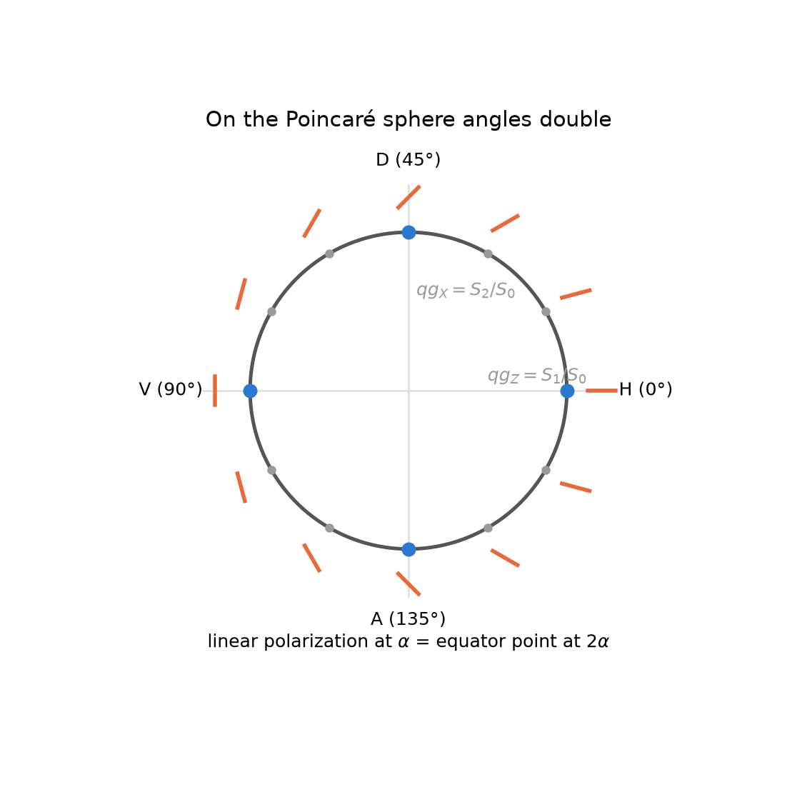
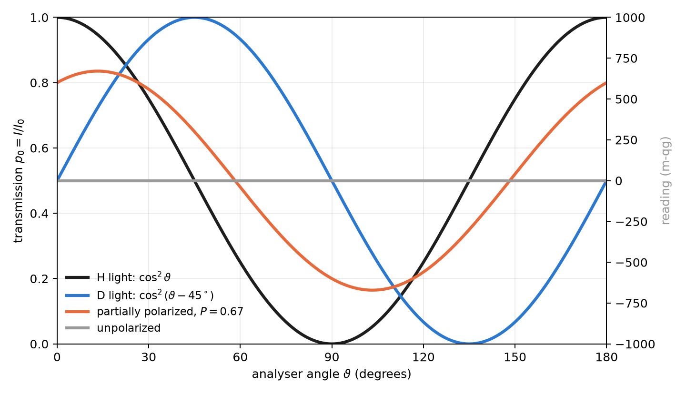
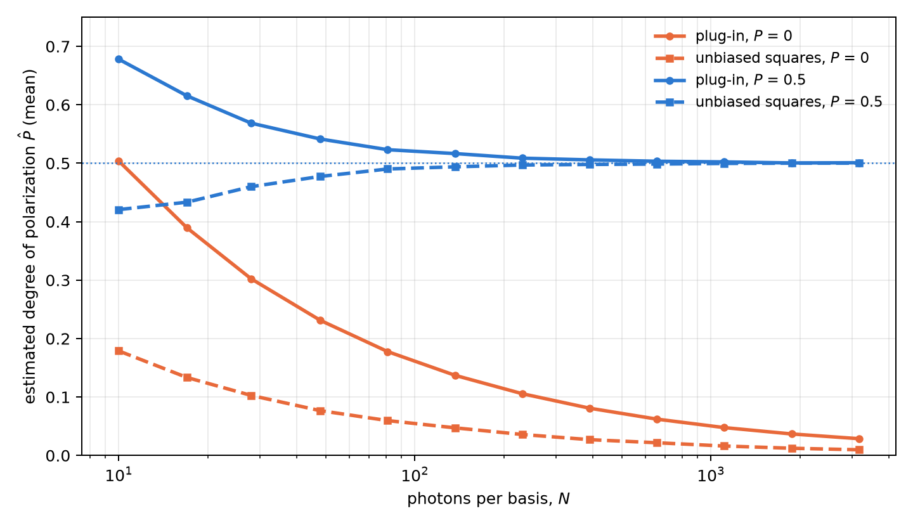

6 Optical polarization and Stokes parameters in qg units
The polarization of a photon is a qubit, and classical polarization optics is, unchanged, the physics of a qubit written with other names. This chapter reads that optics with the base of Chapter 1. The key piece is that a polarizer is a two-outcome measurement, pass or block, and its transmission is exactly the probability \(p_0\) of the qang equation. From there follow Malus’s law, the Stokes parameters, the degree of polarization and photon-counting polarimetry, all in qg and in milli-qang (§83).
6.1 Malus’s law as a probability equation
Light linearly polarized at an angle \(\alpha\) goes through a polarizer set at \(\vartheta\). With \(\Delta=\vartheta-\alpha\), the transmitted fraction is Malus’s law, which for a single photon is a probability:
\[ p_0=\cos^2\Delta . \]
The comparison with Born’s rule in Chapter 1, \(p_0=\cos^2(\theta/2)\), is immediate: the qang angle is twice the physical angle, \(\theta=2\Delta\), and the milli-qang reading is \(m=1000\cos2\Delta\). That is why two orthogonal polarizations, H and V, \(90^\circ\) apart in the laboratory, are opposite points of the sphere, \(180^\circ\) apart (Figure 6.1). An analyser turned \(30^\circ\) from the light transmits \(p_0=0.75\): it is the state at \(\theta=60^\circ\) and \(+500\) m-qg of Chapter 1’s qang circle (Figure 1.1).

For light with any polarization, pure or partial, the transmission through a linear polarizer at \(\vartheta\) is
\[ p_0=\frac{1+qg_Z\cos2\vartheta+qg_X\sin2\vartheta}{2}=\frac{1+\mathbf r\cdot\mathbf a}{2}, \qquad \mathbf a=(\sin2\vartheta,\,0,\,\cos2\vartheta), \]
with \(\mathbf r=(qg_X,qg_Y,qg_Z)\) the qg vector of the light and \(\mathbf a\) that of the state the analyser lets through. It is Chapter 3’s transition probability between two qg vectors (Section 3.4), and its milli-qang reading is \(m=1000\,\mathbf r\cdot\mathbf a\). Figure 6.2 shows four cases: H light (\(\cos^2\vartheta\)), D light (the same curve shifted \(45^\circ\)), unpolarized light (always \(\tfrac12\), that is, 0 m-qg) and partially polarized light with \(qg_Z=0.6\) and \(qg_X=0.3\). The last transmits 0.80 at \(0^\circ\), a maximum of 0.835 at \(13.3^\circ\) and a minimum of 0.165 at \(103.3^\circ\); the difference between maximum and minimum, 0.671, is its degree of polarization.

6.2 The Stokes parameters are qg values
The Poincaré sphere is the Bloch sphere. With \(|H\rangle=|0\rangle\) and \(|V\rangle=|1\rangle\), the normalized Stokes parameters are the three qg values, each the difference of the two probabilities of an analyser:
| qg value | Stokes | analyser | reading |
|---|---|---|---|
| \(qg_Z\) | \(S_1/S_0\) | H / V | \(p_H-p_V\) |
| \(qg_X\) | \(S_2/S_0\) | D / A, at \(\pm45^\circ\) | \(p_D-p_A\) |
| \(qg_Y\) | \(S_3/S_0\) | R / L, circular | \(p_R-p_L\) |
The convention for right circular light varies between texts; here \(R=(|H\rangle+i|V\rangle)/\sqrt2\), so \(S_3>0\) means \(qg_Y>0\) (the library takes the opposite convention with circular_sign=-1). Since each parameter is \(2p_0-1\) in its own basis, each is expressed in milli-qang with the equation of Chapter 1.
The polarization ellipse is read from the angles of the qg vector, halved: its orientation is \(\psi=\tfrac12\operatorname{atan2}(qg_X,qg_Z)\) and its ellipticity \(\chi=\tfrac12\arcsin(qg_Y/P)\). For the partial light of the example, \(\psi=13.3^\circ\): the angle where Figure 6.2 has its maximum.
6.3 Degree of polarization and purity
Partially polarized light is a mixed state. Its degree of polarization is the length of the qg vector, the radius of Chapter 5 (Section 5.1):
\[ P=\sqrt{qg_X^2+qg_Y^2+qg_Z^2}=r,\qquad \operatorname{Tr}\rho^2=\frac{1+P^2}{2}. \]
Unpolarized light sits at the centre of the sphere. An ideal depolarizer has Mueller matrix \(\operatorname{diag}(1,d,d,d)\): it shortens the vector by a factor \(d\) and does not change its direction. It is the case in which Chapter 5 separates direction and radius (Section 5.5): with \(d=0.7\), the light of the example goes from \(P=0.671\) to \(P=0.470\), and the orientation of its ellipse stays at \(13.3^\circ\).
6.4 Lossless elements: the Mueller matrix is the gate rule
A Mueller matrix acts on \((S_0,S_1,S_2,S_3)\); in the order \((I,Z,X,Y)\) it is the Pauli transfer matrix. For a lossless element, with a unitary Jones matrix \(U\), it is exactly qang’s gate rule:
\[ qg'_P=qg_{U^\dagger P U}. \]
Wave plates are single-qubit gates, and Chapter 2 applies as is (Section 2.3): a half-wave plate with its axis at \(22.5^\circ\) takes H to D (\(qg_X=1\)), because it turns the physical polarization by \(45^\circ\) and the point on the sphere by \(90^\circ\); a quarter-wave plate at \(45^\circ\) takes H to a circular polarization (\(qg_Y=-1\) with the convention above). The polarizer, by contrast, is not unitary: it is the measurement. All these identities are checked numerically in tests/test_polarization.py.
6.5 Photon-counting polarimetry
With weak or single-photon sources, the Stokes parameters are estimated by counting: \(n_H,n_V\) in the H/V basis, \(n_D,n_A\) in the diagonal one and \(n_R,n_L\) in the circular one. Each pair gives a qg value with its interval, just like a qubit measurement (Chapter 4). With 1000 photons per basis and counts \((800,200)\), \((650,350)\) and \((500,500)\):
\[ qg_Z=0.599\ [0.548,\,0.647],\quad qg_X=0.299\ [0.240,\,0.358],\quad qg_Y=0.000\ [-0.062,\,0.062], \]
95 % Bayes–Haar intervals. In milli-qang, \(qg_Z\) is \(+599\) m-qg with a resolution of \(\sigma_m=1000\sin\theta/\sqrt N=25\) m-qg.
The degree of polarization needs more care. \(P\) is the square root of a sum of squares, and each square inherits the bias \((1-qg^2)/N\) of Chapter 4 (Section 4.4): with few photons, unpolarized light looks polarized. Figure 6.3 quantifies it with a simulation from this chapter (4000 repetitions per point). With unpolarized light, the plug-in estimator averages \(\hat P\approx0.50\) with 10 photons per basis, \(0.16\) with 100 and \(0.05\) with 1000. Using the unbiased squares brings it down about three times (\(\approx0.18\), \(0.055\) and \(0.017\)), but does not remove it: the square root and the clipping at zero leave a residual bias. With light of \(P=0.5\), the plug-in estimator overestimates at few photons and the unbiased one slightly underestimates; from about 200 photons per basis both match the true value.

The practical consequence: to claim that a source is polarized from few photons, one needs an interval for \(P\) or a threshold calibrated with unpolarized light, not the point value.
6.6 Without qang and with qang
| action | without qang | with qang | difference |
|---|---|---|---|
| transmission of a polarizer | Malus’s law, \(I=I_0\cos^2\Delta\) | \(p_0=\cos^2\Delta\) with \(\theta=2\Delta\); reading \(1000\,\mathbf r\cdot\mathbf a\) m-qg | none in value; qang ties it to the transition probability of Chapter 3 |
| describe the polarization | normalized Stokes parameters \(S_1,S_2,S_3\) | they are \(qg_Z\), \(qg_X\), \(qg_Y\) | identity: the same numbers under another name |
| degree of polarization with few photons | \(\sqrt{S_1^2+S_2^2+S_3^2}\): biased upward | the unbiased squares of Chapter 4 | in favour: the bias drops about three times, without vanishing |
| wave plates | Mueller matrices | the gate rule \(qg'_P=qg_{U^\dagger PU}\) | reformulation |
Balance. Polarization optics already works with qg values under another name (Stokes). The measurable difference is statistical: correcting the squares reduces the bias of the degree of polarization with few photons.
6.7 In code
import math
import numpy as np
from qang import polarization as pz
light = {"Z": 0.6, "X": 0.3, "Y": 0.0}
pz.malus_intensity(light, 0.0) # 0.80: transmission at 0°
pz.malus_intensity(light, math.radians(13.28)) # 0.835: the maximum, at the orientation of the ellipse
H = np.array([1, 0])
pz.jones_to_qg(pz.half_wave_plate(math.radians(22.5)) @ H) # {'X': 1.0, ...}: H → D
pz.jones_to_qg(pz.quarter_wave_plate(math.radians(45)) @ H) # {'Y': -1.0, ...}: H → circular
c = pz.qg_from_counts(800, 200, 650, 350, 500, 500, method="bayes")
c["Z"], c["X"], c["P"] # 0.6, 0.3, 0.671 and the intervals in c["intervals"]The figures are generated by tools/make_cap06_figures.py.
6.8 Summary
- A polarizer is a two-outcome measurement: its transmission is \(p_0=\cos^2\Delta\), Chapter 1’s probability equation with the qang angle equal to twice the physical one, \(\theta=2\Delta\).
- For any light, Malus’s law is the transition probability \((1+\mathbf r\cdot\mathbf a)/2\) between the light and the analyser; its reading is \(1000\,\mathbf r\cdot\mathbf a\) m-qg.
- The normalized Stokes parameters are \(qg_Z\), \(qg_X\) and \(qg_Y\); the ellipse is read from half the angles of the qg vector.
- The degree of polarization is the radius of Chapter 5; a depolarizer shortens it without turning the ellipse.
- Wave plates are gates: the lossless Mueller matrix is the rule \(qg'_P=qg_{U^\dagger PU}\).
- From photon counts each parameter has its interval; the degree of polarization is biased upwards at few photons, and the unbiased squares cut that bias about three times without removing it.
Bibliographic notes
The polarization parameters are those of Stokes (1852). Malus’s law, the Poincaré sphere and the Mueller calculus follow the classical treatment of Born et al. (1999). The numbered research notes (§) cited in this chapter and the scripts that check it are in the repository (Monteverde 2026a); the definition of the qang unit is in Monteverde (2026b).